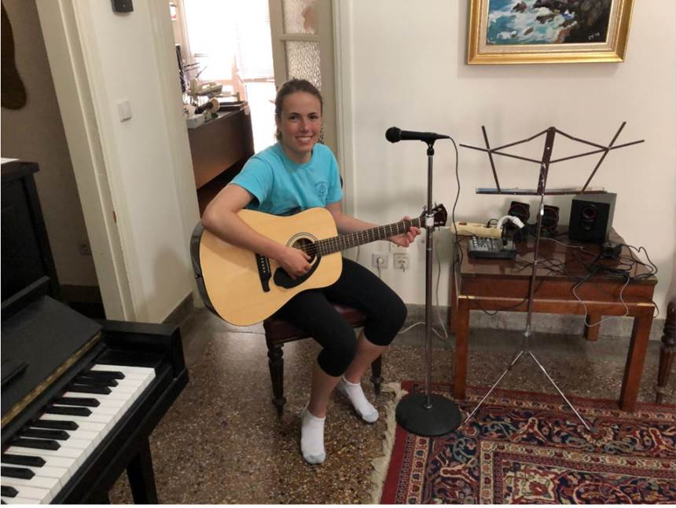
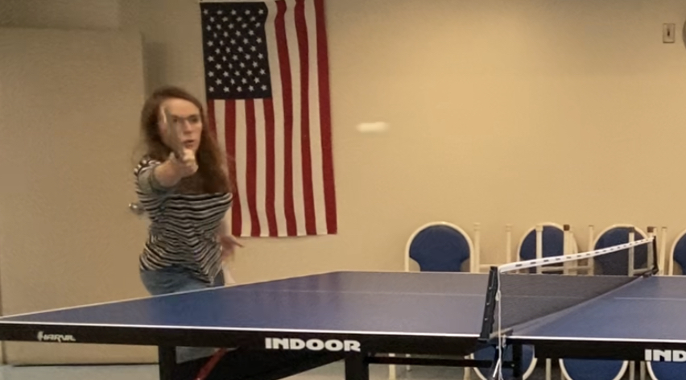

My Personal Interests

Acoustic Guitars
I taught myself the acoustic guitar in high school, which naturally led to countless hours of playing with other musicians for friends and family. I absolutely love serving as a guitar tutor for Seven Mile since 2019 as I am able to share my passion for music with talented young students in Detroit.
Community Involvement
In addition to tutoring guitar, I also contribute to Seven Mile as the Director of Music by assisting with our administration initiatives with local communities. This largely entails coordinating tutor and student attendance at multiple locations, scheduling public musical showcases at the end of each term, and overseeing financial spending.

Ping Pong
Ping pong is one of my favorite sports, both to watch and to play. I signed up for the advanced intramural ping pong sport league at Michigan, and while I often lose miserably and still have a lot of fun in doing so.
Video Editing
I love creative video editing, and am the official videographer for friends and family alike.